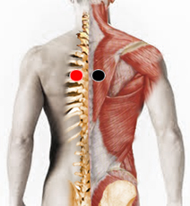

Radiculopatía
Par
paravertebral - paravertebral

Nota: Este par puede presentarse a cualquier altura de la columna vertebral.
Generalidades:
Radiculopatía. Lesión de una raíz nerviosa ocurre cuando ésta es comprimida. Las manifestaciones características del problema son dolor, falta de sensibilidad y sensación de hormigueo o debilidad, mismas que se presentarán en zonas determinadas del cuerpo, dependiendo de la parte afectada de la columna vertebral.
La obstrución de los nervios del sistema nervioso central también puede comprometer la función de diversos órganos y sistemas como digestión, sexualidad, etcétera.
Localización
En este caso los imanes se colocan a los lados de las vértebras o discos afectados, ya sea que el paciente reporte dolor o mediante el rastreo.